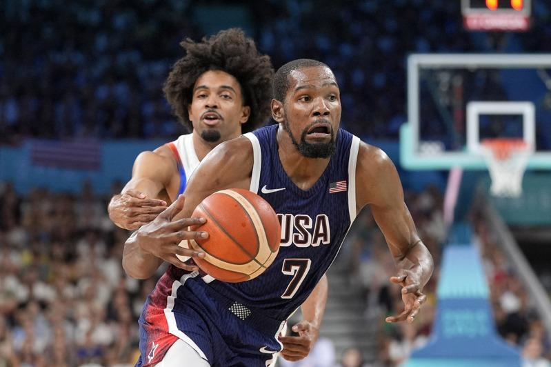

美国队奥运以全胜之姿进入8强赛，杜兰特（Kevin Durant）也因为优秀表现和无解进攻被称为「最强大腿」。不过总教练柯尔（Steve Kerr）在8强赛前的访问中，表示并没有打算将杜兰特摆上先发，预期还是会让他打替补位置。
由于杜兰特因伤缺席了训练营和所有热身赛，纵使预赛第一场对上塞尔维亚，以9投8中高效率砍下23分，后续3战也以63.6%高命中率缴出16分，还是被柯尔放在替补。
「如果杜兰特第一天就来，他有机会先发。」柯尔表示，原先有打算让杜兰特先发出战，但他热身赛缺席期间，美国队已经找到了适合的阵容，而他作为替补也发挥超乎预期的好表现。不过柯尔也表示，后续比赛将越来越困难，杜兰特的上场时间可能会越来越多。
目前8强赛组合已确定，美国首战将对上巴西，如果顺利赢球将面对塞尔维亚、澳洲之间的胜队。
巴黎奥运热话题
- 麟洋配赛后大合照 李洋「1句话」逗笑马来西亚选手
- 与约克维奇打到抢7落败 阿尔卡拉斯：我有过机会
- 30岁生日礼物 中国刘洋夺金 想吃三鲜馅饺子
- 中国男子混泳接力摘金 打破美60年不败纪录
- 选手村太热没冷气 意大利金牌索性去公园睡觉